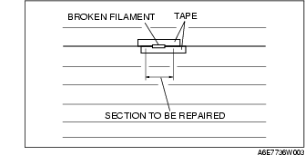

Filament repair
1. Use isopropyl alcohol to clean around the damaged section of the filament.
2. Attach tape above and below the damaged section of the filament.

3. Using a small brush or marking pen, repair the filament with silver paint or equivalent.
4. After 2-3 min, carefully remove the tape without disturbing the repaired area.
- • Do not use the rear window defroster until the paint is completely dry. It may cause other malfunctions if it is used before the paint is dry.
5. Use a hot air blower heated to 150 °C {302 °F} for 30 min or let the paint set for 24 h at 25 °C {77 °F} to allow it to dry completely.